山梨県の産業廃棄物問題について
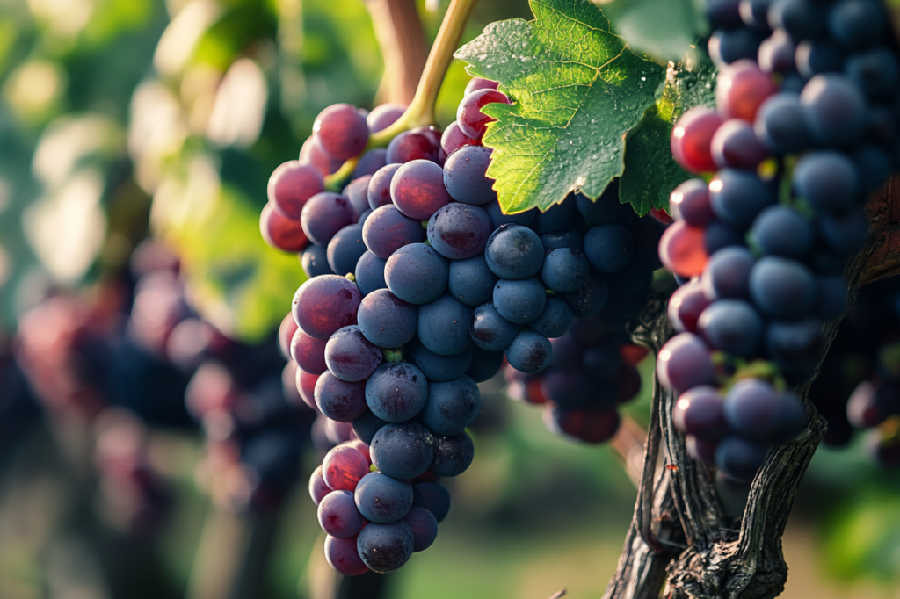
山梨県は日本有数のワイン産地ですが、その陰でワイン製造過程から生じる「パミス」や他の産業廃棄物の処理が課題となっています。これらは貴重な資源でもあるのに、現状では有効活用が進んでいません。私たちは、こうした資源を廃棄物としてではなく、地域の宝として再利用することで、環境負荷の軽減と新たな産業価値の創出を目指しています。
私たちの想い
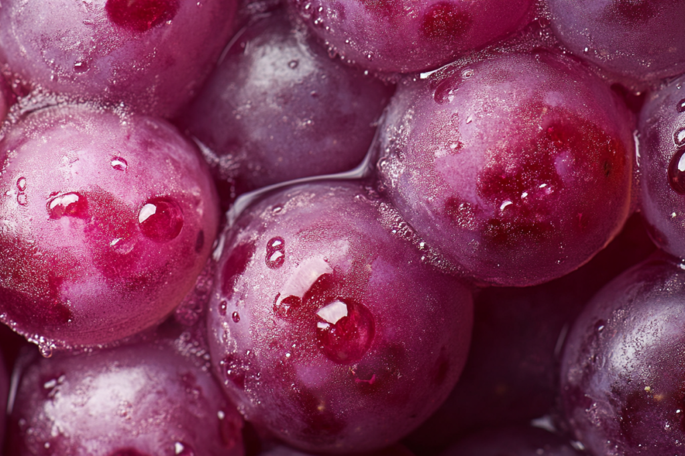
山梨県の特産品であるワイン産業。その製造過程で生まれる「パミス」は、まだ多くが廃棄されています。私たちは、この「もったいない」を新たな価値へと変えたいと考えました。自然と人に優しい染料として生まれ変わったパミスは、環境保護への一歩であり、持続可能な地域づくりへの一助です。地元の資源を活用し、未来につながる活動を広げていきます。
活動の特徴
- パミスをベースにした染料を採用
- 環境に配慮し、産業廃棄物の削減に貢献
- 美しい色合いにこだわり、優しいピンク色に染色
- 女性や子供にも人気で誰でも簡単で楽しい染物体験を実現
- 家庭でも実践できるように持ち帰り染料を使ったDIYが可能
- 地域密着にこだわり、山梨県の資源を活かした地産地消の取り組み
一押しメニュー
パミスを使った染物体験
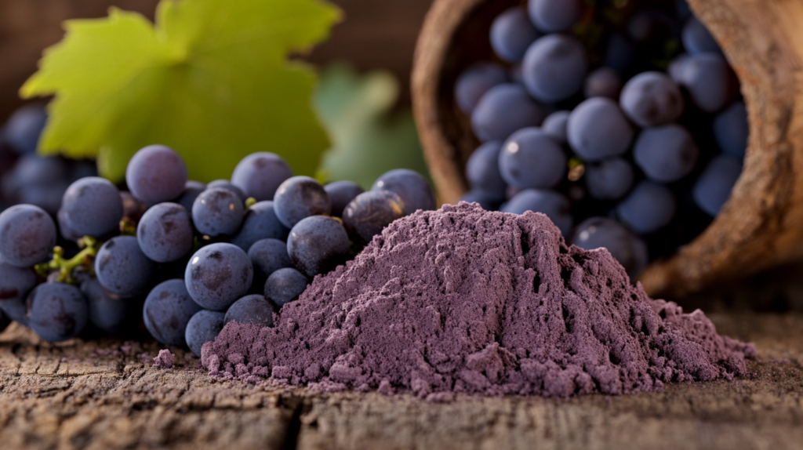
概要
ぶどうの皮「パミス」と花を使った染物体験では、自然の色合いを楽しみながら自分だけの作品を作ることができます。鮮やかで優しいピンクの色彩は、女性やお子様に大変人気です。手軽なプロセスなので、小さなお子様や初心者でも安心して参加いただけます。ご家族やご友人との思い出作りにぴったりの体験です！
注意点
ワイン染めの服は水色、紫、ピンクに色が変化します。
ワインの原料であるブドウに含まれる天然色素のアントシアニンによるもので、pHや温度などの条件によって変化します。
ご家庭での洗濯の際に中性洗剤を使うと紫がかったピンク色になり、弱アルカリ性洗剤を使うと水色に変化します。
ピンク色をキープしたい場合は弱酸性の洗剤を使うか、洗濯後に市販のクエン酸をまぜた水に着けてから乾かしてください。
体験の流れ
染物体験の特徴である模様は、Tシャツの縛り方で決まります。染色前にどのような模様にしたいのか、しっかりと決めておきましょう。

①会場へ到着
染物体験をご予約の5分前にお越しください。受付場所は体験場所向かいにある姉妹店の富士家にて行います。到着次第、店内にお入りいただき、まずはそちらで受付をお済ませください。受付完了次第、スタッフがご案内させて頂きます。
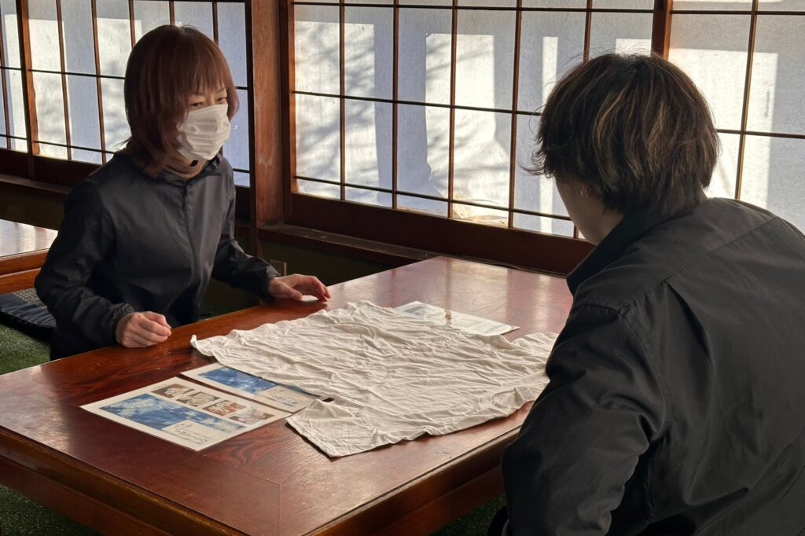
②染物体験の説明
はじめに、スタッフから簡単なご挨拶と染物体験についてご説明させて頂きます。当店の染物体験では、ただ服を染めて持ち帰って頂くだけでなく、パミスを使った山梨ならではの草木染や、藍という日本古来の染料の歴史や染め方など、学びの時間もお過ごしいただければと思います。
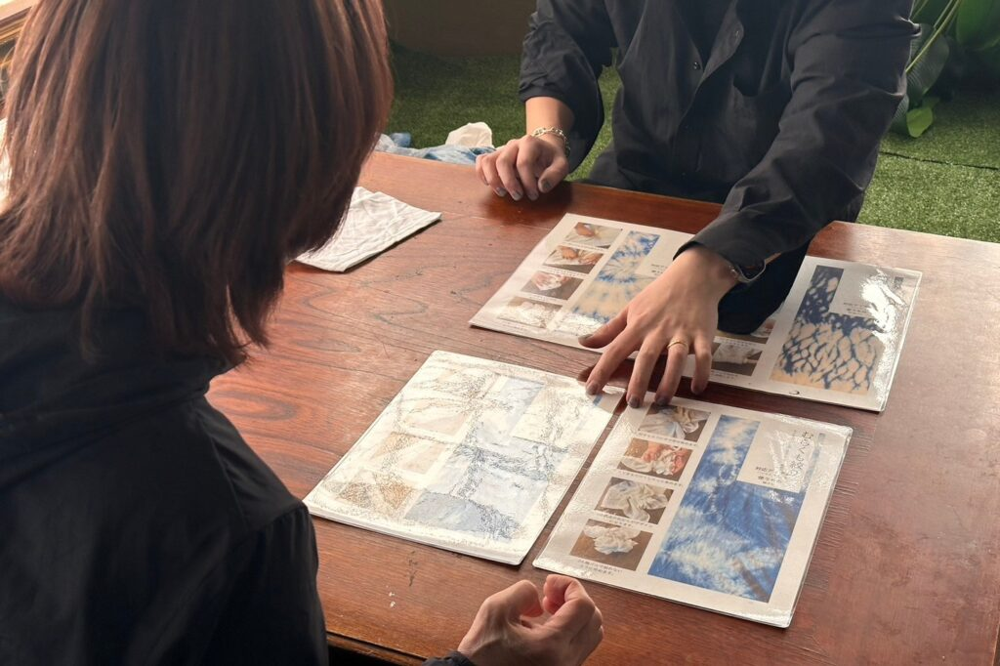
③染料選び
当店の染物体験では「パミス」「藍」「墨」のいずれかをお選びいただきます。お好みの染料をお選びください。複数名でご予約のお客様はお一人様ずつ染料をお選びいただけます。
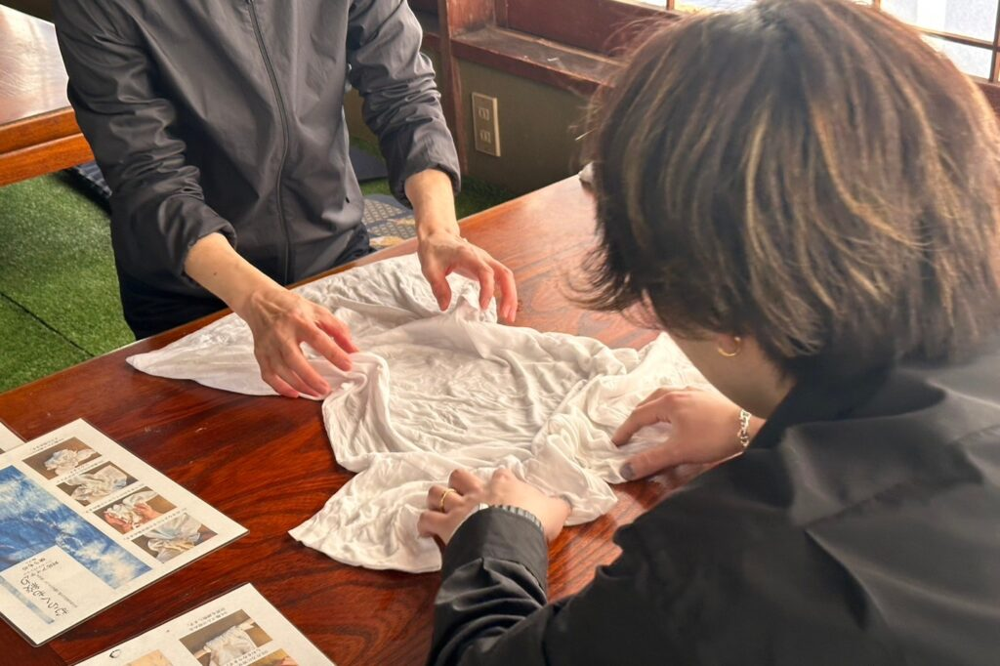
④染め方選び
次は「染め方」を決めていきます。渦巻絞り染め、叢雲（むらくも）染め、筒巻絞り染め、輪ゴム絞り染めなど経験豊富なスタッフがお客様とご相談させて頂きながら染め方を決めていきます。どれか一つの染め方というわけではなく、いくつかの染め方を組み合わせることも可能です。
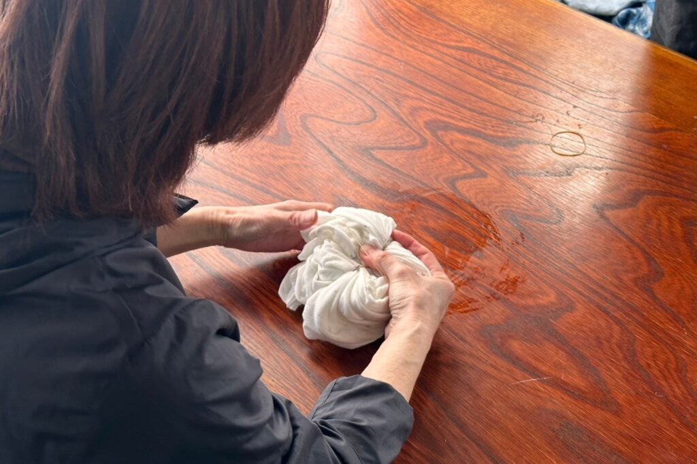
⑤Tシャツを縛る
染料が浸透しやすくなるように水でTシャツを濡らした後は、紐やゴム、麺棒などを使用して服を縛っていきます。この時に、縛り方が緩いと、染料が中まで染みやすくなり模様が付きにくくなります。力のいる作業になりますのでお子様は大人の方と一緒に作業するのがオススメです。
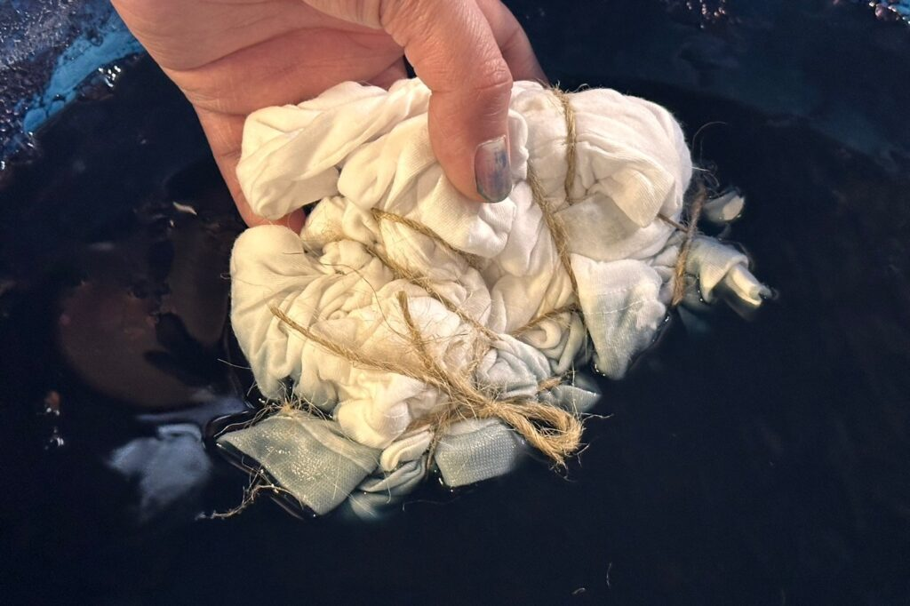
⑥染色液に浸す
紐や輪ゴムでしっかり服を縛った後は、染色液に浸していきます。染色液を入れた大きな容器がありますのでそちらにお客様の服を入れます。染料に浸す時間はそれぞれ異なり、藍は数分、墨は10分ほど浸します。どんな模様・色合いになるか想像しながらお待ち下さい。
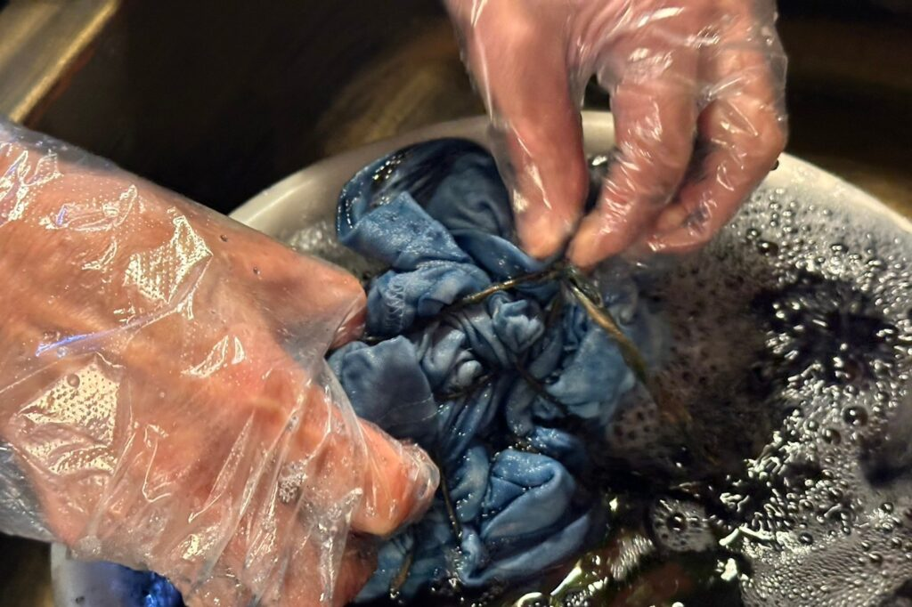
⑦洗い流し
時間になりましたら、縛っていた紐や輪ゴムを全て外し、水で余分な染料を洗い流します。流しすぎたり、逆に少ししか洗い流していないとうまく模様が出ないこともあります。洗い流し終えたら、服を絞ってしっかり脱水します。

⑧完成
脱水した服を広げてみましょう。世界に一つだけの模様が付いた服が完成しました。イメージ通りになったものもあれば、イメージとは少し違った染め方になる場合もあります。いずれにしても、お客様オリジナルのデザインです。
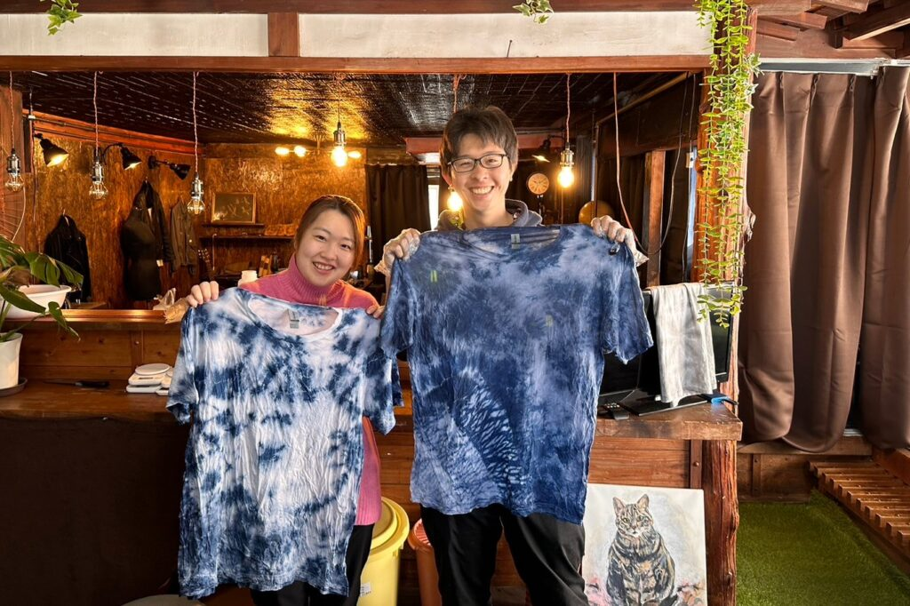
⑨写真撮影
お客様同士でそれぞれ服を持ち寄って記念撮影を行います。富士山の麓で、富士山の伏流水を使った染物体験は山梨へのご旅行の思い出にピッタリです。お子様にとっては発見や経験に、大人の方にとっては童心に帰ってワクワク楽しい時間を過ごすことが出来るはずです。

⑩最後に
最後に服のアフターケアマニュアルをお渡しいたします。ご自宅での服のお取り扱い方法や洗濯の仕方をまとめております。また、店舗では染め直しの染料を販売しております。ご自宅でも色の落ちた服を染め直したりできますので是非ご利用下さい。
染物体験の料金表
染める素材をお持ち込み頂ける場合は素材代金は発生いたしません。
染料は「パミス」「藍」「墨」の3種類からお好きな染料をお選びください。
染物体験に参加されるお客様全てに基本料金として一律3,200円かかります。
基本料金に加えて、染める素材によって合計金額が変わります。
※すべて税込み価格
4歳以下のお子様無料
| 染物体験単品メニュー | |
|---|---|
|
Tシャツ お好みの色や模様をTシャツに付けて頂きます。世界に一つだけの染物体験をお楽しみください。Tシャツを染めて頂きます。 |
+1,000円 |
| ハンカチ | +500円 |
| トートバッグ | +1,000円 |
| ストール | +1,000円 |
| リネンシャツ | +1,500円 |
| リネンパンツ | +1,500円 |
| タイパンツ | +1,000円 |
| 染物体験セットメニュー | |
|
染物+ほうとう作り体験セット 掲載金額に加えて、染める素材代金が別途発生いたします。素材代金については上記の「染物体験単品メニュー」をご覧ください。 |
6,500円 |
|
染物+蕎麦打ち作り体験セット 掲載金額に加えて、染める素材代金が別途発生いたします。素材代金については上記の「染物体験単品メニュー」をご覧ください。 |
6,500円 |
|
染物+吉田のうどん作り体験セット 掲載金額に加えて、染める素材代金が別途発生いたします。素材代金については上記の「染物体験単品メニュー」をご覧ください。 |
6,500円 |
|
染物+山梨名物すりだね体験セット 掲載金額に加えて、染める素材代金が別途発生いたします。素材代金については上記の「染物体験単品メニュー」をご覧ください。 |
4,500円 |
|
染物+薬膳七味作り体験セット 掲載金額に加えて、染める素材代金が別途発生いたします。素材代金については上記の「染物体験単品メニュー」をご覧ください。 |
4,500円 |
※4歳以下のお子様は無料でご利用頂けますが、ご自分の服を染めることはできません。お連れ様と一緒に体験をして頂く分には無料でご参加頂けます。もし4歳以下のお子様のお洋服を持ち込み、一緒に体験をご希望の場合は5～12歳のお子様料金を頂戴いたします。
※染物体験セットメニューをご予約のお客様は掲載料金に加えて、染める素材の料金が加算されます。
郷土料理体験の料金表
郷土料理体験は、染物体験の施設の向かい側で行うことが出来ます。
お客様の声・感想
高菜先生の山梨ワイン染め工房にお越しくださったお客様から嬉しい感想をいただいております。一部ですがご紹介させていただきます。
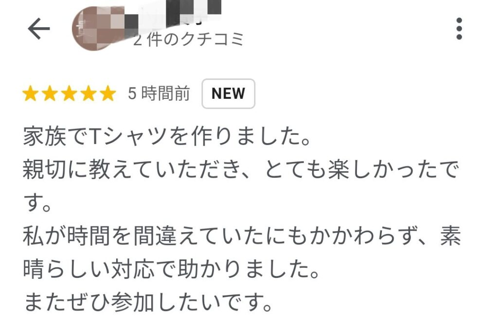
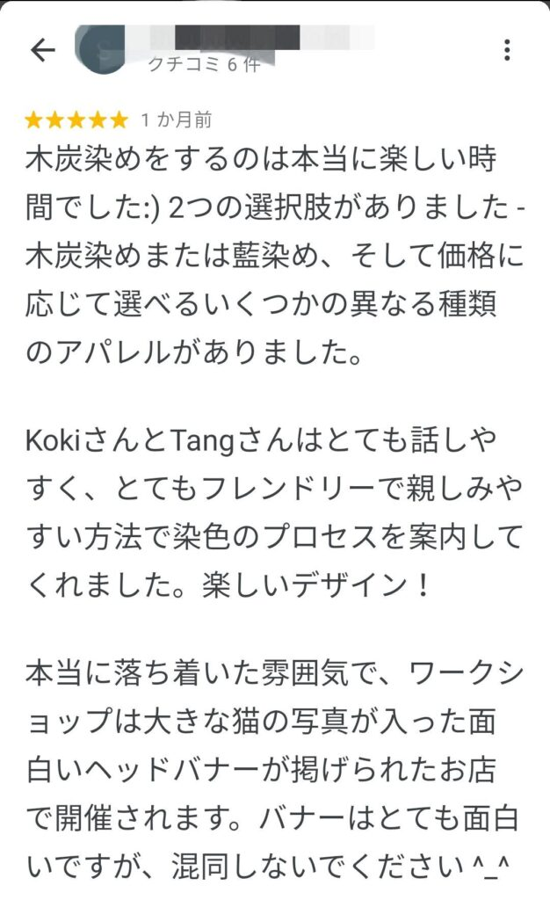
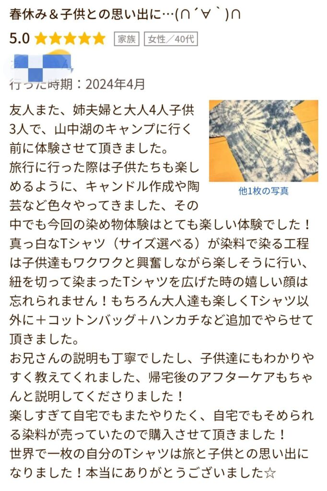
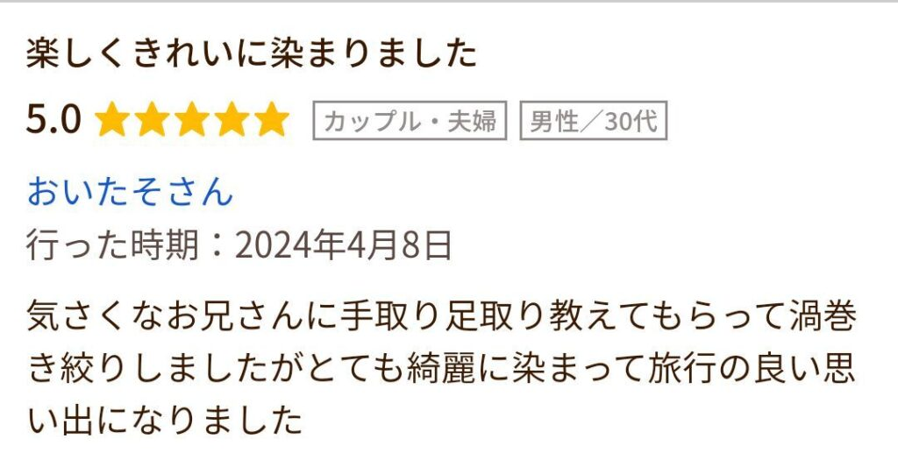
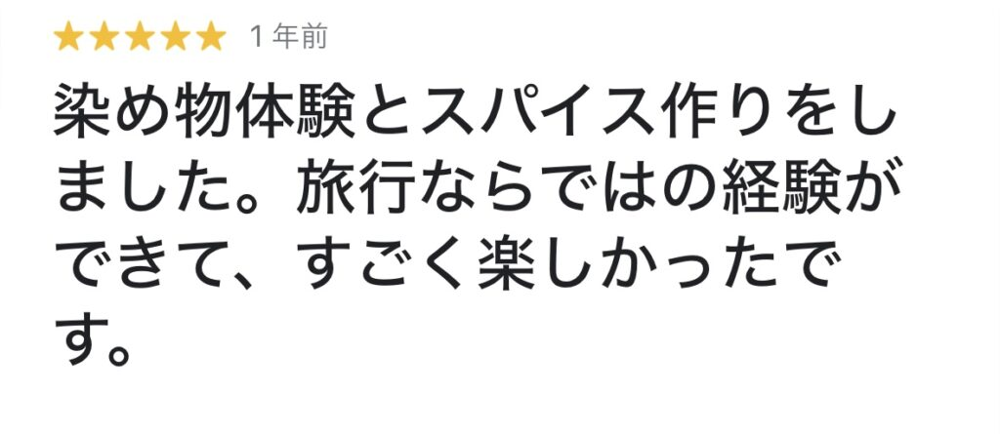
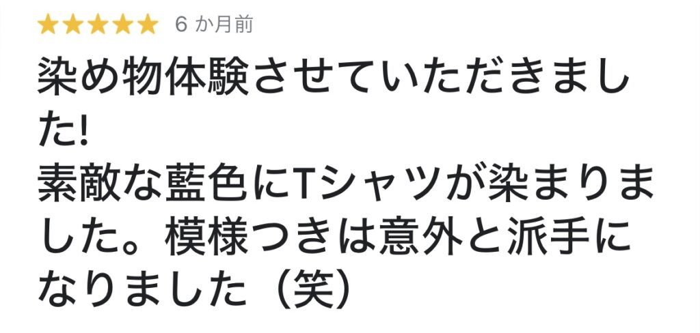
ギャラリー
高菜先生の山梨ワイン染め工房にお越しくださったお客様の様子を掲載しております。一部ですがご紹介させていただきます。


{kind=link}
{kind=link}
{kind=link}
{kind=link}
よくある質問
体験についてお客様からよくいただく質問ですのでぜひ一度お読みください。 ご不明な点がある方はお問い合わせよりお願いいたします。
質問をタップすると回答が表示されます。
Tシャツ以外にも、手ぬぐいやストールもご用意しております。
詳しくはコチラをご覧ください。
はい、夏休みの自由研究などで来店されるお子様も多くいらっしゃいます。難しい工程はございませんのでお気軽にお越しください。
11～14時のお昼時は込み合う可能性がございますが、その他の時間帯であれば比較的すいております。午後14時以降がおすすめです。
当日ご来店いただくこともできますが、不定休のため対応できない場合がございます。お手数ですがご予約の上ご来店をお願いいたします。
はい。スタッフは英語での対応もできますので外国からのお客さまもお気軽にご利用ください。
はい。ご希望のお客さまにはビニール手袋を使っていただいておりますのでスタッフまでお申しつけください。
はい。クレジットカードもご利用いただけます。（VISA/Mastercard/AmericanExpressに限らせていただきます）
お車でおよそ5分です。
最寄駅は富士急行線河口湖駅で、徒歩12分ほどです。
はい。店舗前に無料駐車場がございますのでご利用下さい。
観光バスも店舗前に駐車して頂けます。
はい。お問い合わせLINEから24時間受け付けております。時間は気にせずご連絡ください。
予約優先性としており、ご予約無しでもご来店いただけます。
事前に予約をご希望のお客様はお手数ですが、お問い合わせページから電話またはLINEにてご連絡ください。
最大20名様まで対応させていただいております。それ以上の大人数でのご利用は要相談とさせていただきます。
材料、道具はすべてこちらで用意してあります。お客様にお持ちいただく物は特にございません。ただ、小さなお子様用のエプロンはありませんので、必要であればお客さまでご持参ください。
乾燥させる時間が必要ですので、当日中に着用は難しいです。
初めのうちは色落ちすることがありますので、単独で洗ってください。
はい。ぜひ思い出を映像や画像に残してください。SNSやブログなどへのUPも歓迎しております。
はい。室内での体験になりますので雨の日でも大歓迎です。
予約の流れ
- ≪お申込みページにアクセス≫
- LINEまたはお電話にてご予約受付ております。
- ≪参加人数や日程を送信≫
- 当日予約も受け付けております。
- ≪ご予約確定≫
- 染物体験の他にも、山梨名物ほうとうや蕎麦を作って昼食としてお召し上がり頂けるお食事体験もご用意しております。是非お気軽にご利用下さい。
- ≪現地にてお支払い≫
- お支払は現金またはカードにて承っております。
代表からご挨拶
『自然でデザインする』
当ホームページをご覧いただきありがとうございます。
代表の桑原と申します。
私は10年間美容師をしていました。
一般的に髪の染色には化学薬品が使われます。
そのため手荒れをして辞めていく同業者や、アレルギーになり染めることができなくなってしまったお客様を多数見てきました。
そんな中で【ヘナ】や【インディゴ】と呼ばれるインドやモロッコ産の植物で髪を染める方法に興味を持ち、地球や自然がもつ本質的な色味の美しさに魅了されました。
次第に服も炭やコーヒーで染めたものを着るようになり、一つ一つの服が一点物になる楽しさや自然が作る色味の楽しさを知りました。
より多くの方にこの自然の美しさを知っていただきたいとの思いで体験教室をはじめ、今では山梨を訪れる観光客の皆様にも楽しんでいただけるようになりました。
出来上がった世界に一つしかない”あなただけの一点物”で、旅を終えても楽しい毎日を過ごしていただければと思います。